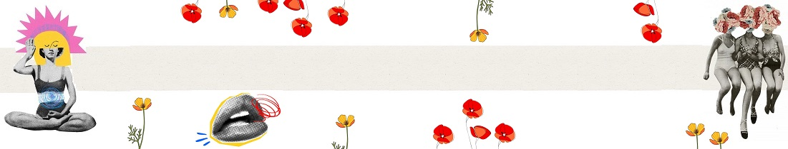

El punto de partida de esta exposición se sitúa en los años veinte y primeros treinta, cuando tanto una serie de cambios de comportamiento existencial como de procedimientos plásticos convierten
progresivamente el acto de crear en una encarnación del deseo artístico. El cambio más notorio lo constituye la incorporación gradual del tema de la mujer-musa, que destrona a la naturaleza muerta conceptual, la máquina, el autómata o el objeto y fuerza un cambio de estilo que libera a la modernidad.
La muestra comprende obras de artistas masculinos y femeninos, con aproximaciones muy diversas. Mientras que ellos tratan del “otro”, ellas hablan de la identidad. Estas visiones conforman los distintos apartados del recorrido.
1. Autorrepresentación con máscara e identidad sexuada
La visión de la mujer tal como ésta se ve a sí misma a través de los autorretratos de fotógrafas de la época, con el contrapunto irónico de Marcel Duchamp travestido como Rrose Sélavy.
2. Reducción del otro-mujer en un mundo masculino
La aproximación masculina al tema de la mujer como equilibrio entre una serie de opuestos en las artes plásticas que se identifican con el retorno al orden de los años veinte y la crisis de valores de comienzos de los años treinta.
3. El arquetipo femenino: contracultura e integración de los orígenes en el presente
La recuperación de la mujer como arquetipo (madre-tierra) de los años treinta y cuarenta.
4. El desnudo femenino o el placer de crear
La asociación del acto creativo con un acto de amor, la sensualidad y la voluptuosidad de los años treinta a los años sesenta.
5. El arte en busca de un imaginario en femenino
6. Revalorización del cuerpo, de la sensibilidad, de la acción y de la participación del espectador
Ampliación del campo artístico a través de un camino que llevará a las artistas plásticas al abandono de la pintura para concentrarse más en la interdisciplinariedad, en la convicción de que una sensibilidad diferente exige materiales distintos.
A través de un recorrido por cincuenta años de cambios, la exposición se propone dar respuesta a por qué, en qué y cómo la representación de la mujer ha constituido un elemento clave de la metamorfosis de la modernidad, entendida ésta como idea y también como expresión artística.

¡VENÍ A VISITARLA!
- Del 15 de Octubre al 15 de Diciembre
- Pabellón Pizarnik

Sorpresa en el Trigo, 1936
Maruja Mallo

Antropofagia, 1929
Tarsila do Amaral

Visita Inesperada, 1958
Remedios Varo